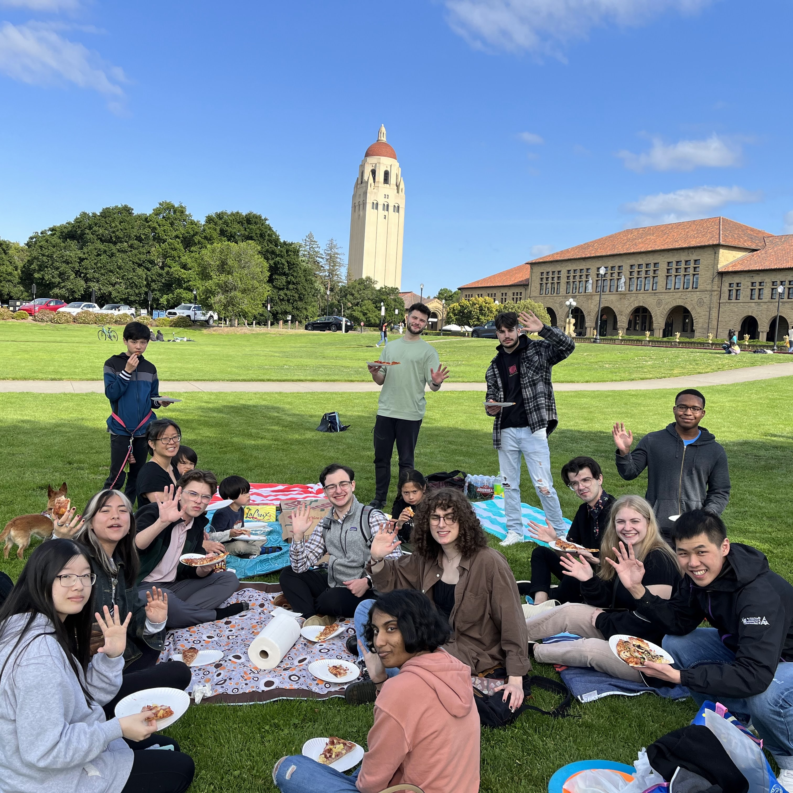
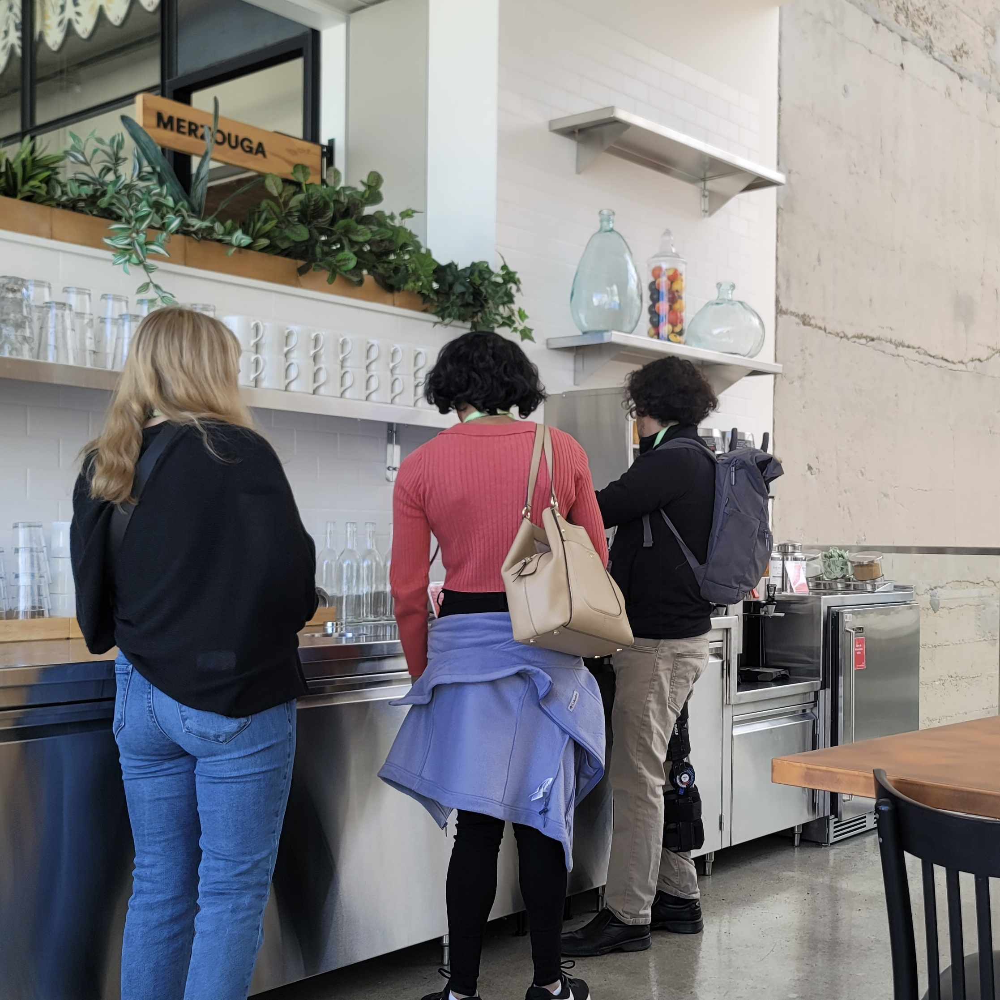
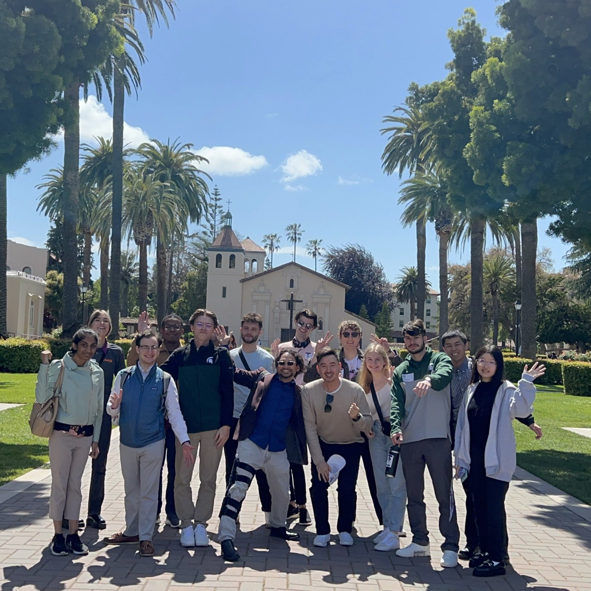
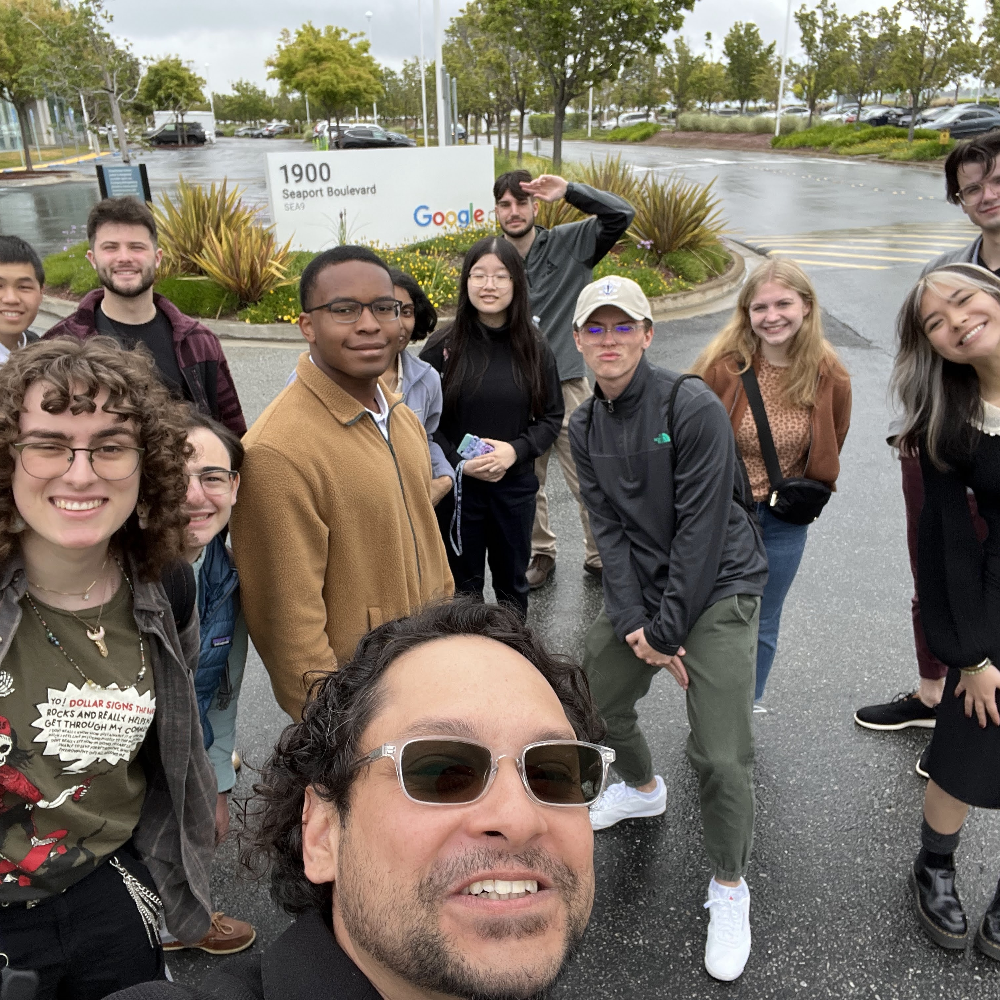
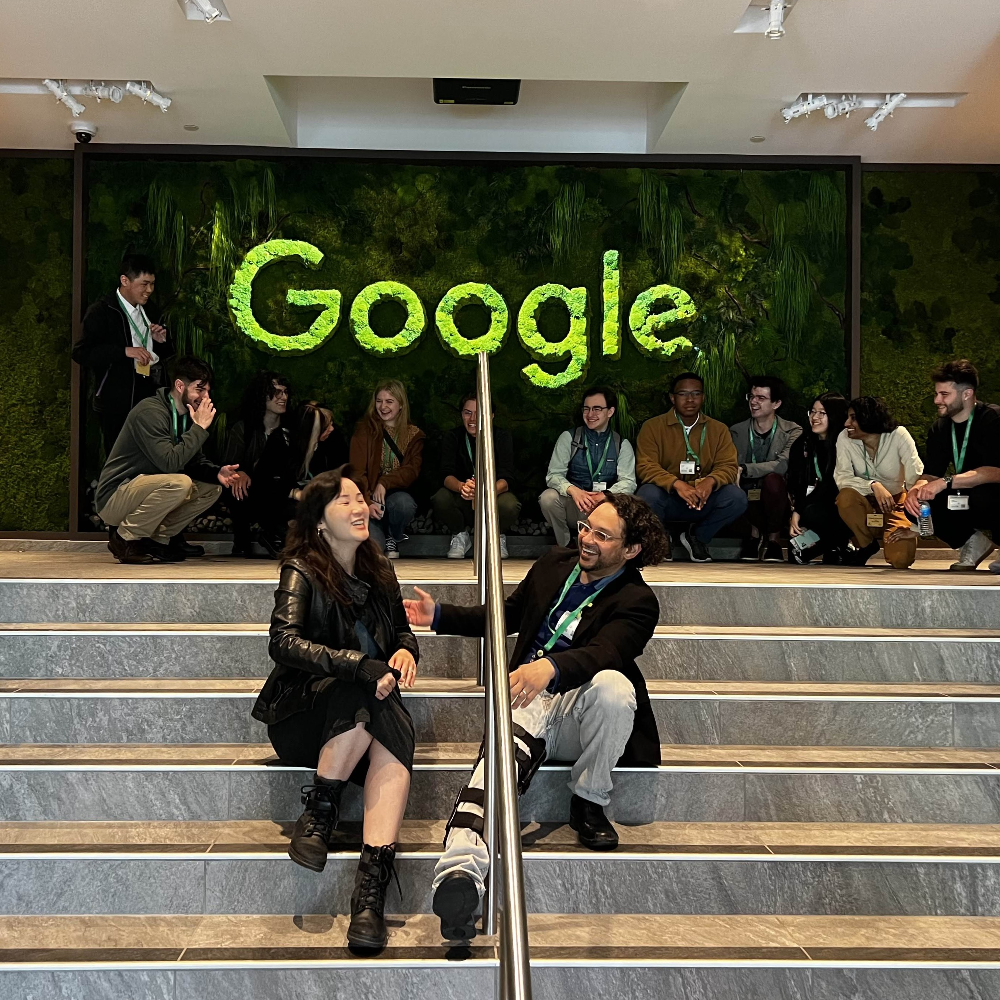

The work showcased is centered around user research, incorporating aspects such as psychology, social media, virtual reality, and statistics.
Projects
Research
In my Information and Society class, I chose to research misinformation, disinformation, fake news, social media bots, and digital literacy. To achieve this, I gathered relevant journal articles, news articles, and posts for reference and analysis. While the focus of the paper was primarily dedicated to Twitter, I addressed misinformation policies on other platforms such as Twitch and Facebook. Although this paper was completed in December 2022, there is still a continuous growth of misinformation on social media, and the arguments mentioned are still relevant today.
In my Understanding Virtual Reality (VR) class, I explored the topic of empathy in the world of VR. I conducted comprehensive research by gathering studies, articles, and first-hand experiences to explore the psychological, emotional, and societal impacts VR may have on users. After a semester of VR analysis, I utilized my prior and first-hand knowledge to evaluate the relationship between empathy and user experience in VR. Despite the potential, it is not a reliable source for enhancing a user's empathic feelings.
In a Media and Information Research class, a peer and I applied learned research and analysis methods to investigate the impact of “flagging” on Twitter to the distribution of misinformation by users. “Flagging” involves specified Twitter users correcting or adding context to posts to combat fake news. Using a Qualtrics survey, we collected and analyzed the results, concluding that flagging led to a decrease in the spread of misinformation. Since Twitter's rebrand to X, “community notes” are very prevalent and appear to have a similar effect to flagging.
Highlights
- 
- 
- 
- 

- 
In May 2023, I had the opportunity to explore Silicon Valley, California, through Michigan State University and Dr. Robby Ratan. This experience immersed me in the world of communication technology through direct interactions with staff and their respective companies. The connections made during this trip are priceless, and I continue to apply the advice gathered to decisions I have made from that point forward. It truly opened my eyes to the various forms of research, analysis, and collaboration involved in these communities. Beyond professional guidance, I improved my social skills among my peers and new connections. The trip fostered personal growth and self-reflection, showcasing perspectives I had not considered before. Exploring Silicon Valley was both inspirational and informative, and it is an experience I'll cherish for life.
Places we visited:
- Chegg
- Airbnb
- Immergo
- Stanford Oval
- Stanford University VR Lab
- Santa Clara University VR Lab
- Google Grove and Google Play
- Netflix
- YouTube
- Salesforce
- Tesla Factory Tour
- Hustle Fund Venture Capital
- Palo Alto Research Center (PARC)
Web Design and Development
I learned to create my personal portfolio website through my Web Design and Development class. Throughout the semester, I worked with web design programming, including HTML and CSS, and applied the methods I learned to build my own website. Seeing the final product increased my interest in the world of web design, inspiring me to explore other programming languages and projects.
Information Technology Project
As part of a team, our goal was to enhance a company's engagement and Search Engine Optimization (SEO) through strategic planning. In collaboration with peers and an existing business, we applied project management principles and processes to create documents and reports aimed at increasing business exposure through backlinking.
Social Media Management - East Lansing Film Festival (ELFF)
After assuming the leadership role in managing the ELFF Twitter account, I collaborated with a group of peers to develop social media strategies to improve engagement and awareness of the event. Using both informational and transformational posts, we applied our strategies and improved engagement on the platform. Additionally, I updated various aspects of the event, including the Twitter and Linktree for ELFF.